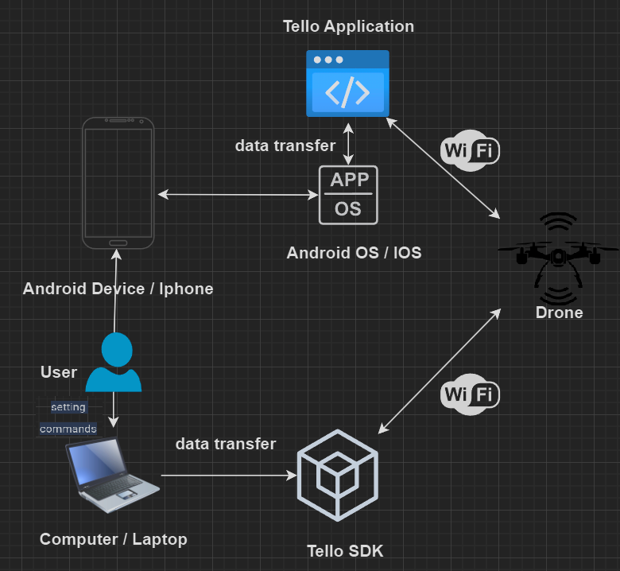
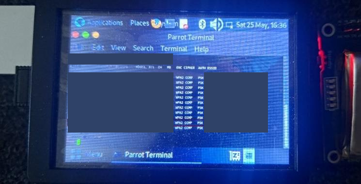
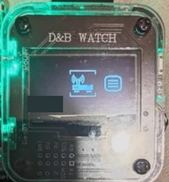
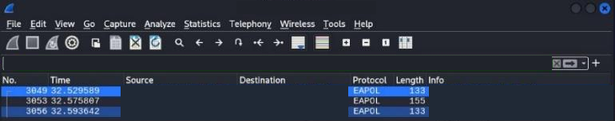
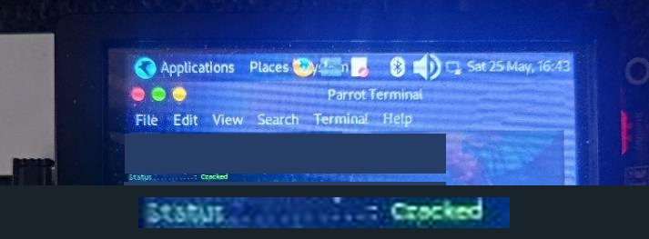

Когато връзката с изпитвания Ryze Tello беше прекъсната, пилотът изгуби едновременно управлението и картината от камерата. При друг опит връзката остана достъпна, но дронът започна да пренебрегва инструкции и от двете устройства, които ги подаваха. За пилота последицата беше сходна. За инженера разликата е съществена. Първият случай поставя въпрос за надеждността на връзката, а вторият — за това кой има право да управлява апарата.
Текстът е редактирана за уеб версия на предоставения български превод на съвместното изследване на Мартин Стефанов, Милен Петров и Аделина Алексиева-Петрова от COMCONF 2024. Тук проследяваме избора на модел, лабораторната постановка, петте изпитвания и техните ограничения. Петте фигури са от документа. Надписите отбелязват къде е показан детайл или е скрита идентифицираща информация. Практическата част описва условията и наблюдаваните резултати.
Защо връзката с пилота има значение
При малък дрон с камера телефонът изпълнява две роли. Пилотът вижда кадъра на екрана и през същото приложение задава движението на апарата. Между двете устройства има още един обмен, който лесно остава незабелязан — телеметрията. Данните за скорост, височина и време помагат на управляващото устройство да следи състоянието на дрона. Командите, телеметрията и видеото използват една безжична мрежа, но за всяко от тях е важно различно свойство на защитата.
Една закъсняла или отхвърлена команда влияе върху движението. Чужда команда поставя под въпрос доверието между апарата и пилота. Видео, което продължава да се показва нормално на телефона, може междувременно да стане видимо и за друг наблюдател. Затова проучихме поотделно кой може да влезе в мрежата, какво вижда след свързването и дали пилотът запазва управлението, когато средата се промени.
Какво показват предишните изследвания
Едно направление в литературата се занимава с откриването на дронове. Звукът на двигателите и особеностите на радиосигнала могат да послужат за разпознаване на апарат. Колекцията DroneRF например позволява да се сравняват записи и да се обучават модели за класификация. Различните радиопротоколи, начини на модулация и условия на запис обаче ограничават преносимостта на резултата между модели. За нашия казус е важно и друго разграничение. Дори да се разпознае конкретният дрон, остава да се установи как самият той разпознава своя пилот.
Друга група трудове изследва протоколите за управление, фърмуера и следите, които могат да се съберат след инцидент. Анализите на MAVLink разглеждат комуникацията между бордовата система и наземна станция. Работата по цифрова криминалистика при дронове поставя въпроса как се свързват конкретен полет, устройство и контролер. Изследването на DJI DroneID показва как излъчваната информация може да засегне и поверителността на оператора. Тези изследвания на различни устройства и комуникационни системи насочиха вниманието ни към това какво се предава, кой го получава и какви доказателства остават след прекъсване на управлението.
Как е построена оценката
Използвахме етапи от Penetration Testing Execution Standard (PTES). Първо очертахме границите на системата и активите, които имат значение за пилота. После описахме нормалния обмен при работещо приложение и сравнихме наблюденията с публичната документация. Част от информацията беше достъпна при обичайна работа със системата. За други проверки беше необходим лабораторен компютър, присъединен към мрежата на апарата.
При избора на сценарии използвахме STRIDE и категориите на OWASP за устройства от интернет на нещата. Сред тях за Tello са особено уместни началните настройки за достъп, слабите пароли, достъпните мрежови услуги и поверителността на данните при пренос. Отворената услуга очертава точка за изследване. Последиците установявахме чрез видимо поведение — дали пилотът може да подаде инструкция, дали вижда камерата и дали друг участник може да наблюдава обмена.
В конференционната работа е посочена и системата CVSS за оценяване на сериозността на уязвимостите. В публикуваните резултати няма числов вектор или индивидуална оценка за всеки опит. По тази причина по-долу са описани наблюдаваните ефекти и условията, при които екипът ги е установил.
Дронът и лабораторната среда
Ryze Tello е малък дрон с камера, който създава собствена Wi-Fi мрежа. В изследването телефон с Android изпълнява мобилното приложение Tello, а компютърът използва програмния интерфейс Tello SDK. Оригиналната схема показва двата начина за връзка. Моделът има система за визуално позициониране. Производителят посочва Wi-Fi в обхвата 2,4 GHz, картина на живо с резолюция 720p и до 13 минути полет. Това са характеристики на продукта. Времето за полет и качеството на изображението не са измервани в нашия експеримент. Технически характеристики на Ryze Tello


В лабораторията използвахме телефон Asus ROG Phone 6, Raspberry Pi 4 с дисплей и Parrot OS, външен безжичен адаптер и оборудване за радионаблюдение и контролирани смущения. Wireshark ни даде поглед върху мрежовия обмен. Разграничавахме съобщенията за управление, данните за състоянието на дрона и видеопотока. Опитът за идентификация на бордовата операционна система по мрежовите ѝ характеристики не даде еднозначно съвпадение.
Важно е в кой момент е направено наблюдението. В първоначалното състояние на изследвания екземпляр липсваше зададена Wi-Fi парола. После за експеримента въведохме умишлено слаба парола. Именно при тази конфигурация беше отчетена защита WPA2 с предварително споделен ключ. Двете състояния обясняват защо в публикацията присъстват едновременно първоначално отворена мрежа и снимка на защитена мрежа.


Кои заплахи разглеждаме
В таблицата на конференционната работа пет категории на STRIDE са свързани с конкретни сценарии. Шестата категория, repudiation, се отнася до възможността участник да отрече извършено действие. В оригиналната таблица тя няма отделен сценарий. Следната редакция показва какво попада в обхвата на практическия опит.
| Категория на STRIDE | Въпрос при Tello | Обхват на изследването |
|---|---|---|
| Подмяна на самоличност | Може ли чуждо устройство да бъде прието за доверен участник? | Проверени са контролът на достъпа до Wi-Fi и доверието в мрежовите адреси. |
| Подправяне на данни или команди | Как реагира апаратът при инструкции от втори източник? | Проверено е поведението на управлението. Промени по файловата система не са изследвани. |
| Разкриване на информация | Кой вижда обмена с контролера и изображенията от камерата? | Наблюдавани са мрежовият обмен и достъпът до картина на живо. |
| Отказ от услуга | Запазват ли се управлението и видеото при нарушена комуникация? | Изпитани са мрежово натоварване и смущение на радиовръзката. |
| Повишаване на привилегии | Възможен ли е административен достъп до бордовата система? | Сценарий от модела. Резултат за такъв достъп не е докладван. |
Сателитната навигация също присъства в обзора на заплахите за дронове. Изпитваният Tello няма вграден GPS приемник и това определи избора на опити. Обратното инженерство на софтуера и достъпът до бордовата файлова система също останаха извън обхвата.
Какво показа всеки експеримент
1. Паролата за безжичната мрежа
Защитената конфигурация ни позволи да проверим какво се случва, ако собственикът избере лесно предвидима парола. В лабораторията избраната стойност беше успешно установена и мрежата стана достъпна за друго устройство. Това е резултат за конкретната тестова парола. Изследването не измерва устойчивостта на произволно генерирана дълга парола и не определя колко време би отнела проверката ѝ.
Следващите три фигури документират различни части от този опит. Първата показва физическо устройство от стенда. Втората съдържа наблюдавани служебни съобщения за удостоверяване, а третата — крайния статус от проверката на тестовата парола. Само третият кадър отчита резултата за конкретната стойност.






2. Наличност на връзката
Разгледахме два случая — натоварване на мрежова услуга и смущение на радиовръзката. Те засягат различни части от системата. За първия е необходим достъп до мрежата. При втория се променят условията в самата безжична среда. По време на изпитванията пилотът изгуби възможност да управлява апарата и да следи видеото. Ефектът беше наблюдаван и при неподвижен дрон, и при управление от пилота.
Конференционната публикация описва качествено резултата от тези изпитвания. Не са дадени отделни стойности за закъснение, праг на натоварването или време за възстановяване при двата механизма. Няма и измерване, което да обоснове извод за разпределена атака от много източници.
3. Видимост на обмена в локалната мрежа
Проверихме какво вижда трето устройство, когато доверието в локалното адресиране чрез ARP бъде нарушено. В този сценарий екипът успя да наблюдава пакетите, обменяни между телефона и дрона. Самото име на Wi-Fi мрежата и фактът, че телефонът е свързан с нея, не са достатъчни основания пилотът да смята този обмен за частен.
Резултатът има ясно предварително условие — наблюдателят вече участва в същата локална мрежа. Записът свидетелства за видимост на трафика при изпитания сценарий. За да се установи какво означава това за съдържанието от камерата, беше направена отделна проверка.
4. Конкуриращи се команди за управление
Програмният интерфейс е предвиден и за легитимно управление от компютър. При нашия опит мобилният контролер и второ устройство подаваха инструкции към един и същ апарат. Контролерът изгуби възможност да командва надеждно дрона, включително по време на полет. Апаратът започна да пренебрегва инструкции и от двата източника и се отклони от желаното движение.
Опитът установява загуба на надеждно управление. Трайното поемане на контрола от втория участник остава хипотеза в дискусията.
5. Поверителност на видеото
Последният опит проследява съдържанието, което камерата предава към пилота. При описаната мрежова конфигурация екипът успя да декодира и да визуализира картината на друго устройство. Така въпросът премина от „виждат ли се пакети“ към „може ли някой да види самия заснет обект“. За хората, които попадат в кадър, именно вторият резултат има пряко значение.
В оригинала тази демонстрация е описана при експериментите. За нея няма отделен набор от измервания на кадровата честота, закъснението или качеството на видеото. Тя показва възможност за наблюдение при конкретните условия на локалната мрежа.
Какво може да се заключи
При този Tello изборът на мрежова парола променя кой може да се присъедини към системата. След допускането на още едно устройство изникват други два въпроса — кой може да изпраща валидни команди и кой може да вижда камерата. Силна уникална парола е практична първа мярка за собственика. Тя сама по себе си не разрешава спора между два вече допуснати източника на инструкции и не предотвратява смущения във физическата среда.
За разработчика резултатите дават три конкретни посоки. Управлението може да се свърже с изрично удостоверена сесия на пилота. При загубена връзка или конфликт между команди поведението на апарата и обратната връзка към оператора трябва да са предвидими. Достъпът до видеото може да има собствена защита, така че присъствието в една и съща мрежа да не е достатъчно за получаване на картина. Това са инженерни изводи от наблюденията. Ефектът от подобни промени не е изпитван в проучването.
Проведен е лабораторен казус с един модел и с описаната конфигурация. Не са публикувани серии от повторения, проценти на успеваемост или сравнение между версии на фърмуера. Констатациите посочват конкретни свойства, които заслужават проверка при друг апарат. От тях не следва автоматично заключение за всеки дрон, който използва Wi-Fi.
Благодарности и източници
Мартин Стефанов и Милен Петров са посочени с принадлежност към Софийския университет „Св. Климент Охридски“, а Аделина Алексиева-Петрова — към Техническия университет – София. Изследването е подкрепено от Фонд „Научни изследвания“ по договор КП-06-Н57/4 от 16 ноември 2021 г. за изследване на алгоритми за машинно обучение при анализ и разработка на високосигурен софтуер. Страница на научния проект
Оригиналната конференционна публикация е Analysis of Drone Security, COMCONF 2024, с. 46–52. Под същото заглавие и със същите трима автори има и отделна публикация в Journal of Electromagnetics, том 8, 2025 г., с. 8–14. Конференционен запис и DOI · Журнален запис
Подбрана литература от 19-те източника в конференционната публикация
- R. Altawy и A. M. Youssef. Security, Privacy, and Safety Aspects of Civilian Drones. ACM Transactions on Cyber-Physical Systems. DOI
- M. F. Al-Sa’d и съавтори. Изследване на откриването и разпознаването на дронове по радиосигнала, послужило като основа за разработването на публична база с данни. Future Generation Computer Systems, том 100, 2019 г., с. 86–97. DOI
- J.-P. Yaacoub, H. Noura, O. Salman и A. Chehab. Обзор на заплахите, ограниченията и препоръките за сигурността на безпилотни системи. Internet of Things, том 11, 2020 г., статия 100218. DOI
- F. Iqbal и съавтори. Drone forensics: examination and analysis. International Journal of Electronic Security and Digital Forensics, том 11, 2019 г., с. 245–264.
- N. Schiller и съавтори. Drone Security and the Mysterious Case of DJI’s DroneID. Network and Distributed System Security Symposium, 2023 г.
- C. Malveaux, S. G. Hall и R. Price. Обзор на приложенията на безпилотни системи за дистанционно наблюдение в земеделието, 2014 г. DOI
- IEEE Computer Society LAN/MAN Standards Committee. IEEE Std 802.11, издание от 2007 г. Спецификации за физическия и каналния слой на безжичните локални мрежи.
- I. Güvenç и съавтори. Изследване на откриването, локализирането и проследяването на безпилотни системи, 2017 г. DOI
- S. Jeon и съавтори. Емпирично изследване на акустичното откриване на дронове в реална среда с дълбоки невронни мрежи, 2017 г. DOI